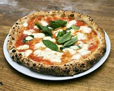

Authentic Italian Pizza
Experience the true taste of Italy with our traditional hand-crafted pizzas. To make a classic Pizza Margherita, start by preparing the dough. In a bowl, combine 325ml of warm water, 2 teaspoons of sugar, and 1 packet of dry active yeast, stirring well and letting it sit for about 5-10 minutes until frothy. In a separate large bowl, mix 500g of all-purpose flour with 10g of salt, then pour in the yeast mixture and 2 tablespoons of olive oil, stirring to form a dough.

Why Choose Us?
- Authentic Italian recipes
- Fresh, high-quality ingredients
- Cozy and friendly atmosphere
- Fast and friendly service